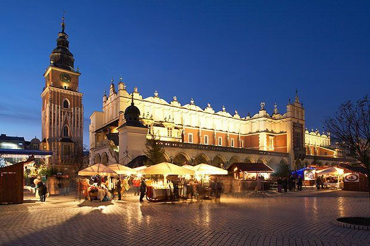
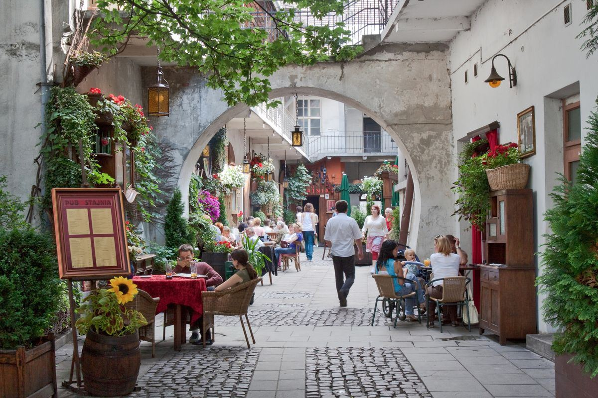

Cracovie, la ville du dragon
Ancienne capitale royale, Cracovie mélange château, églises gothiques, quartier juif et une ambiance étudiante très vivante.
Les incontournables de Cracovie

Le château du Wawel
Le château des rois de Pologne, sur sa colline au bord de la Vistule.

Le Rynek Główny
La plus grande place médiévale d'Europe, avec la Halle aux draps et la basilique Notre-Dame.

Kazimierz
L'ancien quartier juif : petites cours, cafés, street art et marché aux puces.

Balade en calèche
Fais le tour de la vieille ville en calèche, comme autrefois.
Le dragon t’attend à Cracovie
Au pied du château du Wawel, au bord de la Vistule, la statue de Smok crache de vraies flammes toutes les quelques minutes. Et dans les boutiques de souvenirs, il est partout !


La légende de Smok, le dragon du Wawel
Un dragon, un roi, un cordonnier rusé… découvre l’histoire que tous les enfants de Cracovie connaissent.
Lire la légende →Visite avec un guide local
Les mots utiles
Pose toutes tes questions à Smok : il traduit en polonais tout ce que tu veux, avec la prononciation.
Parler avec Smok- Dzień dobry[djègn do-bri]= Bonjour
- Dziękuję[djin-kou-yè]= Merci
- Smok[smok]= Le dragon
- Zamek[za-mèk]= Le château